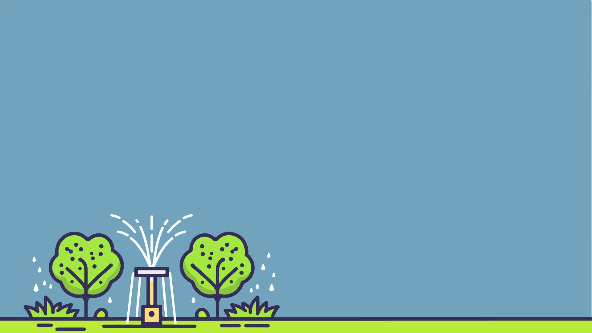

Irrigation System
b4_wg189_261013_01
Tap Enter to get started.
Irrigation is the artificial supply of water to crops, used to enhance farm productivity and reduce a farmer's dependence on monsoon rains. Different terrains and soils require different types of irrigation techniques.
You are provided with a particular terrain. Select your crop that suits the terrain and plan smart irrigation choice to keep the crops healthy and conserve water.
Tap the suitable crop and the best irrigation method for the given terrain.
Choose your crop
Choose your irrigation system
This crop wont grow well on this terrain, try the other crop.
- Water available for crops
- Water getting evaporated
- Runoff water
Water saved
Crop yield
Insights
Irrigation is the artificial supply of water to crops to support their growth, improve crop productivity and reduce dependence on rainfall. Different irrigation methods suit different crops, terrains, soils and water sources.
1. Canal Irrigation
Source of water: Rivers, reservoirs, dams.
Insight: Water is transported through a network of canals to agricultural fields, supplying crops with the water they need to grow. Canal irrigation is commonly used in flat or gently sloping plains where water can be distributed across fields. The Phad irrigation system of Maharashtra is a traditional, community-managed example of canal-based irrigation.
2. Drip Irrigation
Source of water: Wells, borewells, tanks, reservoirs or pipelines, often using pumps where needed.
Insight: Water is delivered slowly near plant roots through pipes and emitters. This can reduce water loss through evaporation and runoff while supplying crops with water efficiently.
3. Sprinkler Irrigation
Source of water: Wells, borewells, tanks, reservoirs or pipelines, often using pumps where needed.
Insight: Water is sprayed over crops through sprinkler nozzles, simulating rainfall. This method can be suitable for uneven terrain and sandy soils, depending on local conditions.
4. Bamboo Drip Irrigation
Source of water: Natural springs and hill streams.
Insight: Practised traditionally in Meghalaya, this system uses hollow bamboo channels to carry water downhill by gravity and deliver it slowly to plants, helping reduce water wastage.